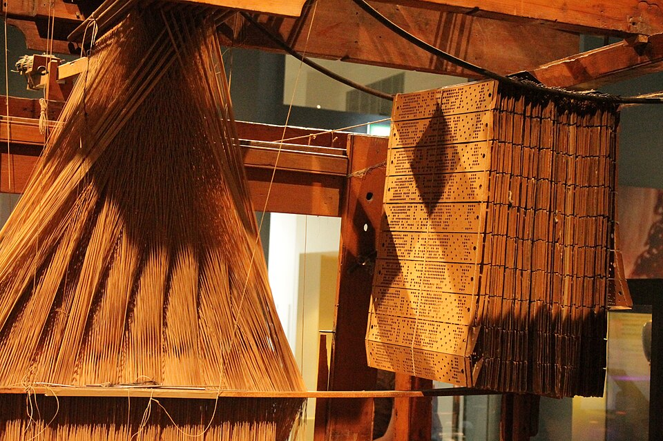

shogun
shogun
Good morning!
Nur das Schöne wird die Welt retten!
Fjodor Dostojewski
Nicht verzagen, Doc Alvers fragen!
Informatik — Grundkurs 11
Jahresrückblick
Was vom Schuljahr bleibt — und was in Klasse 12 darauf aufbaut
Nicht verzagen, Doc Alvers fragen!
Kapitel 01
Ein Jahr im Überblick
Vier Lernbereiche und ein Wahlbereich

Nicht verzagen, Doc Alvers fragen!
Wo wir stehen
Letzte Woche: Puffer — Wiederholung quer durchs Jahr
Das Schuljahr ist fast geschafft — Zeit für den großen Überblick
Heute: die Kernthemen in 10 Fragen, eure Rückmeldung, der Blick auf Klasse 12
Leitfrage: Was habe ich gelernt, das über das Schuljahr hinaus trägt?
Nicht verzagen, Doc Alvers fragen!
Das Schuljahr auf einen Blick
| Bereich | Thema | Kern |
|---|---|---|
| LB 1 | Informatik als Wissenschaft | vier Bereiche: theoretisch, technisch, praktisch, angewandt |
| LB 2 | Persönliches Informationsmanagement | vom Signal zum Wissen, Quellen prüfen, präsentieren |
| LB 3 | IT-Sicherheit und Ökologie | Schutzziele, Datensicherheit, Kryptologie, Datenschutz |
| LB 4 | Projekt Informationsmanagement | eine offene Frage im Team bearbeiten |
| Wahlbereich | Datenkomprimierung und Fehlererkennung | Lauflängencodierung, Prüfbits, Prüfziffern |
Dazu die Exkurse: Wissensmanagementsysteme, Präsentieren, Digitalisierung
Nicht verzagen, Doc Alvers fragen!
Die Kernbegriffe
| Frage | Antwort |
|---|---|
| Welche vier Wissenschaftsbereiche? | theoretische, technische, praktische, angewandte Informatik |
| Der Weg vom Signal zum Wissen? | Signal, Nachricht, Information, Wissen |
| Die Schritte des Informationsmanagements? | Bedarf klären, beschaffen, aufbereiten, nutzen, bewerten |
| Der Kern der IT-Sicherheit? | Vertraulichkeit, Integrität, Verfügbarkeit |
| Was ist eine Aussage wert? | so viel wie ihr Beleg |
Bei den Schutzzielen kommen Authentizität und Verbindlichkeit häufig hinzu
Nicht verzagen, Doc Alvers fragen!
Kapitel 02
Rote Fäden
Was über alle Lernbereiche trägt
Nicht verzagen, Doc Alvers fragen!
Das Modell
Der Begriff aus Klasse 11, der in Klasse 12 am weitesten trägt
Abbildung: Ein Modell steht für ein Original
Verkürzung: Es lässt Merkmale weg
Pragmatik: Es gilt für einen bestimmten Zweck
Verkürzung ist ein Merkmal, kein Mangel — beim Zweckwechsel muss man neu prüfen
Nicht verzagen, Doc Alvers fragen!
Sicherheit und Daten
Sicherheit ist ein Zustand auf Zeit — morgen kann eine neue Lücke bekannt werden
Und immer eine Abwägung: Mehr Schutz kostet Aufwand und Bequemlichkeit
Deshalb steht die Bewertung des Schutzbedarfs am Anfang
Wichtigste Regel für personenbezogene Daten: nur erheben, was für den Zweck nötig ist
Verschlüsselung ist erst die zweite Verteidigungslinie
Nicht verzagen, Doc Alvers fragen!
Arbeiten, präsentieren, urteilen
| Thema | Was bleibt |
|---|---|
| Projekt | eine offene Frage in bearbeitbare Schritte zerlegen |
| Zusammenarbeit | klare Zuständigkeiten und eine gemeinsame Fassung |
| Präsentation | eine klare Botschaft, die beim Publikum ankommt |
| digitale Werkzeuge | Nutzen, Kosten und Nebenwirkungen abwägen |
| Automatisierung | Tätigkeiten verschieben sich — neue entstehen, andere fallen weg |
| Fachsprache | macht Aussagen eindeutig und damit überprüfbar |
Im Beruf gefragt: Informationen beschaffen, bewerten und verständlich weitergeben
Nicht verzagen, Doc Alvers fragen!
Kapitel 03
Ausblick auf Klasse 12
Modellierung, Datenbanken, Algorithmen
Nicht verzagen, Doc Alvers fragen!
Grundkurs Informatik in Klasse 12
| Bereich | Thema | Worum es geht |
|---|---|---|
| LB 1 | Informatische Modellierung | Modellbegriff, Prozesse modellieren, Projekte planen |
| LB 2 | Modellierung von Datenbanken | ER-Modell, Tabellen, Abfragen mit SQL |
| LB 3 | Algorithmen und Programme | Sprachen, Struktogramme — weiter in Klasse 13 |
| Wahlbereich | Künstliche Intelligenz | Teilgebiete der KI, ein kleines Experiment |
Der große neue Schwerpunkt: informatische Modellierung von Prozessen und Datenbanken
Nicht verzagen, Doc Alvers fragen!
Gut vorbereitet in Klasse 12
Neuer Stoff baut auf Begriffen auf: Grundbegriffe und Modellvorstellung sicher beherrschen
Wer dort unsicher ist, trägt die Lücke mit
Keine Software vorab installieren — die Werkzeuge lernt ihr im Kurs kennen
Guter Vorsatz: die eigenen Lücken benennen und gezielt schließen
Nicht verzagen, Doc Alvers fragen!
Die wichtigste Frage der Informatik
Nicht: Welche Programmiersprache ist die beste? Welcher Rechner der schnellste?
Sondern: Wie stelle ich ein Problem so dar, dass es lösbar wird?
Die Darstellung entscheidet über die Lösbarkeit — genau das ist Modellbildung
Werkzeuge und Geräte sind austauschbar — dieses Denken bleibt
Nicht verzagen, Doc Alvers fragen!
Werkzeuge wechseln, das Denken bleibt: Probleme zerlegen, Informationen prüfen, Daten schützen — und jede Lösung beginnt mit einem Modell.
Merksatz
Nicht verzagen, Doc Alvers fragen!
Fun Facts
Das Wort Informatik prägte Karl Steinbuch 1957
Die drei Modellmerkmale Abbildung, Verkürzung, Pragmatik stammen von Herbert Stachowiak (1973)
Das relationale Datenmodell, auf dem Datenbanken mit Tabellen beruhen, beschrieb Edgar F. Codd 1970
Die Abfragesprache SQL entstand in den 1970er-Jahren bei IBM — und ist bis heute Standard
Nicht verzagen, Doc Alvers fragen!
Eure Aufgabe
Quiz-Rückblick: die Kernthemen des Jahres in 10 Fragen — nach jeder Frage: Warum stimmt die Antwort?
Feedbackrunde: Was hat euch geholfen, was sollte im nächsten Jahr anders laufen?
Lückenliste: Jede und jeder notiert zwei Begriffe, die noch wackeln — euer Plan für Klasse 12
Ausblick: Welches Thema aus Klasse 12 reizt euch am meisten — und warum?
Zum Schluss: Aufgaben (20) auf der Planseite — Lösung pro Aufgabe zum Aufklappen
Nicht verzagen, Doc Alvers fragen!